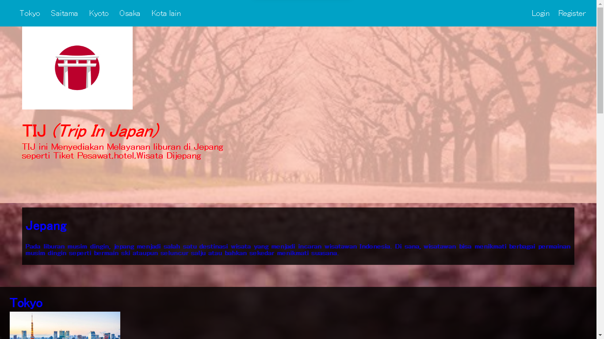

4.Trip In Japan
TIJ Adalah Menyediakan Layanan Pemesan Hotel,Vila Dan apertemen,Tiket,Pesawat,Kereta tiket,dan Visa Liburan ke Jepang
TIJ Adalah Menyediakan Layanan Pemesan Hotel,Vila Dan apertemen,Tiket,Pesawat,Kereta tiket,dan Visa Liburan ke Jepang
BookShelf atau Rak Buku Adalah Menyimpan Buku yang di simpan